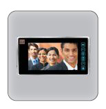

Ceasefire Range of Video Door Phones
Your front door is your first line of defence. It is all that stands between your safety and the dangers that lie outside. Who you
let in could mean the difference between life and death.
This is where our video door phone systems come in. These devices allow you to take a look at what's outside without having
to open the door like you would in the case of a night latch. And what's more, youwon't have to rely on the tiny, distorted
image you see through a peephole: our sophisticated cameras and monitors provide you with crisp, clear images.
Ceasefire's Video Door Phone System is your first step towards security.
What is a Video Door Phone System?
A Video door phone system comprises of an outdoor unit with a camera and an indoor monitor. This system provides a clear
view of whoever's outside your door and even lets you communicate with them safely. Ceasefire provides two variants of this system: the Single Apartment Unit and the Multi Apartment Unit.
VDP Villa Kit - Basic

It has a 4.3" color TFT monitor which supports a slave monitor and a second door panel.
Power supply and a color camera entrance panel.
Features
- 4.3" TFT Color Monitor
- Door open function
- Supports a slave monitor
- Communication between master and slave monitor
- Melody selection (2 melodies)
- 4 wire easy installation
- IP44 entrance door panel
- CE Certified
VDP Villa Kit - Premium
It has 3.5'' TFT LCD display, a power supply and a color camera.
Features
- 3.5" TFT LCD display
- Door open function
- Additional monitor connection
- Conversation with additional monitor
- Doorbell panel and CCTV monitoring button is used for displaying cameras of door panels
- 2 different ring melodies
- Secure audio/video conversation
- Easy mounting and wiring
- IP44 flat door camera
- Touch buttons
- 2 CCTV connection
VDP Apartment Model - Analogue Module
Multi system button type color entrance door panel
Features
- Color Camera
- 86 camera angle
- Camera view lighting
- Surface mounting
- Lighting button with LED
- 10 Adjustable camera angle
- Opens only with special key
- IP44 protection standard
- CE Certified
VDP Apartment Model - Digital Module
It is a multi system keypad type color video & audio entrance panel. It has a guidebook
forming, arranging and erasing functions
Features
- Keypad
- Color camera
- 86 degree camera angle
- 128 x 64 pixel LCD
- Camera view lighting
- Surface mounting
- Lighting keypad with LED
- Name list, editing, deleting properties
- Name search
- Opening the door by keypad password
- Fast call by keypad numbers
- Adjustable 10° door panel camera
- System protection by passwords
- Opens only with special key
- IP44 protection standard
- CE certified
VDP Indoor Unit Multi Apartment Model - Handsfree

Video multi apartment touch screen indoor unit with stairway lighting and door control.
Features
- 7" TFT color monitor
- Touch screen button
- Hands free communication
- Door release control
- Light control
- Stairways light control
- View CCTV cameras
- 4 different ring melodies
- Communication with guard
- Privacy call
- Setting color/brightness/contrast/volume
- Dip switch structure for digital addressing
- Possible to switch 75 ohm for video monitors
- Easy wall mounting
- CE certified
VDP Indoor Unit Multi Apartment Model - Handset(Without Intercom)
Video multi apartment indoor unit with door release and stair light control.
Features
- 4.3" TFT color monitor
- Door release control
- Stairways light control
- Viewing entrance door panels
- Viewing CCTV cameras
- Communication with guard
- 4 different ring melodies
- Privacy call
- Settings color/brightness/contrast/volume
- Dip switches structure for digital addressing
- Possible to switch 75 ohm for video monitor
- Easy wall surface mounting by apparatus
- CE Certified
VDP Indoor Unit Multi Apartment Model - Handset (With Intercom)
4.3" video multi apartment monitor with intercom feature.
Features
- 4.3" colored TFT LCD screen
- Stairways Lighting
- Outdoor Camera Display
- Flatdoor Camera Display
- Supports CCTVs viewing
- Conversation with security guard
- Conversation between flats
- Adjustable brightness/contrast/doorbell volume
- Mounting easiness on plaster with hanger apparatus
- 4 different ring melodies
- System is automatically closed if handset forgotten open
- 4 audio communication simultaneously
Here are Some Salient Features
Accessories
Per Apartment Door Camera
Features
- This camera is mounted per each apartment
- Only camera display available
- No audio communication
Video Switcher
Features
- It is used for gathering the video signals from different door panels and forwarding to
central unit.
Data Distributor
Features
- It is used for good quality data distribution between different apartments that have
different distances from the main line.
Video Distributor
Features
- It is used for video distribution from the junction points at different floors or between
separate Apartments.
Extra Power Supply
Features
- Power supply: 24VDC, 3A
- Operating voltage: 220-230VAC (50-60Hz)
Staircase Light Timer
Features
- Auto continuous selection
- Adjustable time between 6 sec and 6 min
- Fuse protection
- Available to use E27 lamp up to 2200W and fluorescent lamp up to 800 W
- Easy mounting on the wall surface
Multi System Video Power Supply With CCTV Module
Features
- The ability to control guard unit
- Up to 3 door lock control relay output
- Up to 1 stair light control relays
- The ability to control 4 CCTV cameras
- SMPS (switch mode power supply
- Can run between 85-265 VAC
- Easy wire connection by terminals
- DIN13 rail size
- IP20 protection standard
- Short circuit protection
- Ability to connect external detector
- CE Certified
Guard Handset for Multi System
Features
- The ability to call flat monitors and doorkeeper by keypad.
- Date and time function
- Select 2 different melodies
- Ability to show detector alarms as short message.
- Melody sound volume switch
- Name list and calling from name list function
Ceasefire Light with Motion Sensor Ceiling Mounted - Basic
It is a ceiling armature with motion sensor. It turns on the lamps automatically when it detects movement.
Features
- Turns on the lamps automatically when it detects movement
- 360 motion sensor
- Saves energy
- Indoor use
- CE Certified
Ceasefire Light with Motion Sensor and Emergency Light - Premium
Ceiling armature with motion sensor. It detects every direction by the 360 motion sensor and is equipped with emergency light and battery backup.
Features
- Detecting every angle by the 360° motion sensor
- Soft lighting by the soft glass
- With LED emergency lighting after electrical disconnection
- Excellent sensing by the digital control technology
- Adjustable time delay and day light level
- Easy mounting on the wall surface
- CE Certified
Ceasefire Light with Motion Sensor Wall Mounted
It is a wall armature with motion sensor. It detects every angle with the 3 sensor technology.
Features
- Detecting every angle with the 3 sensor technology
- Soft lighting by opal glass
- Adjustable time delay, light and sensing distance
- Excellent sensing by the digital control technology
- Easy mounting on the wall surface
- CE Certified
Ceasefire Ceiling Type LED Sensor with 360 Motion Sensor With LED

This is a ceiling type light with emergency LED lighting.
Features
- A class energy saving thanks to LED lighting
- Ability to detect every angle through 360 motion sensor technology
- Smooth lighting through sanded glass
- Chrome appearance
- Perfect detection thanks to digital technology
- Adjustable time delay, lux settings
- Easy mounting on the surface
- More Energy Saving Feature through LED lighting
- Emergency lighting feature when power cut
- Emergency lighting intensity 13 Lux / 23 Lumen
- Battery type 3 × 1000 mAh Ni-Mh
- Lighting intensity 108 Lumen
Ceasefire 360 Spot Type Motion Sensor Flush Mount
It is a flush mounted 360 spot type motion sensor light.
Features
- Ability to detect every angle through 360 motion sensor technology
- 30 right-left swivel sensor module
- Easy flush mount installation
- Adjustable time delay, lux settings
- Perfect detection thanks to digital technology
- Ability to adjust between 18-360 by angle apparatus
Ceasefire Switch Type Motion Sensor
This is a ceiling wall mounted switch type motion sensor light.
Features
- AUTO ON, OFF mode selection by tri-state switch
- Easy mounting on surface and flush mount
- Available to use on ceiling and on well
- Adjustable time delay, lux settings
- Perfect detection thanks to digital technology
- 360 sensing angle on the ceiling, 180° sensing angle on the wall